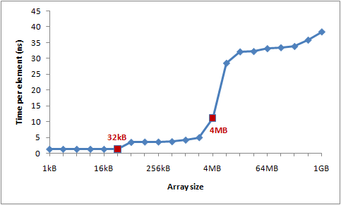

7个示例科普CPU Cache
（感谢网友@我的上铺叫路遥翻译投稿）
CPU cache一直是理解计算机体系架构的重要知识点，也是并发编程设计中的技术难点，而且相关参考资料如同过江之鲫，浩瀚繁星，阅之如临深渊，味同嚼蜡，三言两语难以入门。正好网上有人推荐了微软大牛Igor Ostrovsky一篇博文《漫游处理器缓存效应》，文章不仅仅用7个最简单的源码示例就将CPU cache的原理娓娓道来，还附加图表量化分析做数学上的佐证，个人感觉这种案例教学的切入方式绝对是俺的菜，故而忍不住贸然译之，以飨列位看官。
原文地址：Gallery of Processor Cache Effects
大多数读者都知道cache是一种快速小型的内存，用以存储最近访问内存位置。这种描述合理而准确，但是更多地了解一些处理器缓存工作中的“烦人”细节对于理解程序运行性能有很大帮助。
在这篇博客中，我将运用代码示例来详解cache工作的方方面面，以及对现实世界中程序运行产生的影响。
下面的例子都是用C#写的，但语言的选择同程序运行状况以及得出的结论几乎没什么影响。
示例1：内存访问和运行¶
你认为相较于循环1，循环2会运行多快？
int[] arr = new int[64 * 1024 * 1024];
// Loop 1
for (int i = 0; i < arr.Length; i++) arr[i] *= 3;
// Loop 2
for (int i = 0; i < arr.Length; i += 16) arr[i] *= 3;
第一个循环将数组的每个值乘3，第二个循环将每16个值乘3，第二个循环只做了第一个约6%的工作，但在现代机器上，两者几乎运行相同时间：在我机器上分别是80毫秒和78毫秒。
两个循环花费相同时间的原因跟内存有关。循环执行时间长短由数组的内存访问次数决定的，而非整型数的乘法运算次数。经过下面对第二个示例的解释，你会发现硬件对这两个循环的主存访问次数是相同的。
示例2：缓存行的影响¶
让我们进一步探索这个例子。我们将尝试不同的循环步长，而不仅仅是1和16。
for (int i = 0; i < arr.Length; i += K) arr[i] *= 3;
下图为该循环在不同步长(K)下的运行时间：

注意当步长在1到16范围内，循环运行时间几乎不变。但从16开始，每次步长加倍，运行时间减半。
背后的原因是今天的CPU不再是按字节访问内存，而是以64字节为单位的块(chunk)拿取，称为一个缓存行(cache line)。当你读一个特定的内存地址，整个缓存行将从主存换入缓存，并且访问同一个缓存行内的其它值的开销是很小的。
由于16个整型数占用64字节（一个缓存行），for循环步长在1到16之间必定接触到相同数目的缓存行：即数组中所有的缓存行。当步长为32，我们只有大约每两个缓存行接触一次，当步长为64，只有每四个接触一次。
理解缓存行对某些类型的程序优化而言可能很重要。比如，数据字节对齐可能决定一次操作接触1个还是2个缓存行。那上面的例子来说，很显然操作不对齐的数据将损失一半性能。
示例3：L1和L2缓存大小¶
今天的计算机具有两级或三级缓存，通常叫做L1、L2以及可能的L3（译者注：如果你不明白什么叫二级缓存，可以参考这篇精悍的博文lol）。如果你想知道不同缓存的大小，你可以使用系统内部工具CoreInfo，或者Windows API调用GetLogicalProcessorInfo。两者都将告诉你缓存行以及缓存本身的大小。
在我的机器上，CoreInfo现实我有一个32KB的L1数据缓存，一个32KB的L1指令缓存，还有一个4MB大小L2数据缓存。L1缓存是处理器独享的，L2缓存是成对处理器共享的。
Logical Processor to Cache Map:
*— Data Cache 0, Level 1, 32 KB, Assoc 8, LineSize 64
*— Instruction Cache 0, Level 1, 32 KB, Assoc 8, LineSize 64
-*– Data Cache 1, Level 1, 32 KB, Assoc 8, LineSize 64
-*– Instruction Cache 1, Level 1, 32 KB, Assoc 8, LineSize 64
**– Unified Cache 0, Level 2, 4 MB, Assoc 16, LineSize 64
–*- Data Cache 2, Level 1, 32 KB, Assoc 8, LineSize 64
–*- Instruction Cache 2, Level 1, 32 KB, Assoc 8, LineSize 64
—* Data Cache 3, Level 1, 32 KB, Assoc 8, LineSize 64
—* Instruction Cache 3, Level 1, 32 KB, Assoc 8, LineSize 64
–** Unified Cache 1, Level 2, 4 MB, Assoc 16, LineSize 64
（译者注：作者平台是四核机，所以L1编号为0~3，数据/指令各一个，L2只有数据缓存，两个处理器共享一个，编号0~1。关联性字段在后面例子说明。）
让我们通过一个实验来验证这些数字。遍历一个整型数组，每16个值自增1——一种节约地方式改变每个缓存行。当遍历到最后一个值，就重头开始。我们将使用不同的数组大小，可以看到当数组溢出一级缓存大小，程序运行的性能将急剧滑落。
int steps = 64 * 1024 * 1024;
// Arbitrary number of steps
int lengthMod = arr.Length - 1;
for (int i = 0; i < steps; i++)
{
arr[(i * 16) & lengthMod]++; // (x & lengthMod) is equal to (x % arr.Length)
}
下图是运行时间图表：

你可以看到在32KB和4MB之后性能明显滑落——正好是我机器上L1和L2缓存大小。
示例4：指令级别并发¶
现在让我们看一看不同的东西。下面两个循环中你以为哪个较快？
int steps = 256 * 1024 * 1024;
int[] a = new int[2];
// Loop 1
for (int i=0; i<steps; i++) { a[0]++; a[0]++; }
// Loop 2
for (int i=0; i<steps; i++) { a[0]++; a[1]++; }
结果是第二个循环约比第一个快一倍，至少在我测试的机器上。为什么呢？这跟两个循环体内的操作指令依赖性有关。
第一个循环体内，操作做是相互依赖的（译者注：下一次依赖于前一次）：

但第二个例子中，依赖性就不同了：

现代处理器中对不同部分指令拥有一点并发性（译者注：跟流水线有关，比如Pentium处理器就有U/V两条流水线，后面说明）。这使得CPU在同一时刻访问L1两处内存位置，或者执行两次简单算术操作。在第一个循环中，处理器无法发掘这种指令级别的并发性，但第二个循环中就可以。
[原文更新]：许多人在reddit上询问有关编译器优化的问题，像{ a[0]++; a[0]++; }能否优化为{ a[0]+=2; }。实际上，C#编译器和CLR JIT没有做优化——在数组访问方面。我用release模式编译了所有测试（使用优化选项），但我查询了JIT汇编语言证实优化并未影响结果。
示例5：缓存关联性¶
缓存设计的一个关键决定是确保每个主存块(chunk)能够存储在任何一个缓存槽里，或者只是其中一些（译者注：此处一个槽位就是一个缓存行）。
有三种方式将缓存槽映射到主存块中：
- 直接映射(Direct mapped cache)
每个内存块只能映射到一个特定的缓存槽。一个简单的方案是通过块索引chunk_index映射到对应的槽位(chunk_index % cache_slots)。被映射到同一内存槽上的两个内存块是不能同时换入缓存的。（译者注：chunk_index可以通过物理地址/缓存行字节计算得到） 2. N路组关联(N-way set associative cache)
每个内存块能够被映射到N路特定缓存槽中的任意一路。比如一个16路缓存，每个内存块能够被映射到16路不同的缓存槽。一般地，具有一定相同低bit位地址的内存块将共享16路缓存槽。（译者注：相同低位地址表明相距一定单元大小的连续内存） 3. 完全关联(Fully associative cache)
每个内存块能够被映射到任意一个缓存槽。操作效果上相当于一个散列表。
直接映射缓存会引发冲突——当多个值竞争同一个缓存槽，它们将相互驱逐对方，导致命中率暴跌。另一方面，完全关联缓存过于复杂，并且硬件实现上昂贵。N路组关联是处理器缓存的典型方案，它在电路实现简化和高命中率之间取得了良好的折中。
http://my.csdn.net/uploads/201204/18/1334757273_8141.png
（此图由译者给出，直接映射和完全关联可以看做N路组关联的两个极端，从图中可知当N=1时，即直接映射；当N取最大值时，即完全关联。读者可以自行想象直接映射图例，具体表述见参考资料。）
举个例子，4MB大小的L2缓存在我机器上是16路关联。所有64字节内存块将分割为不同组，映射到同一组的内存块将竞争L2缓存里的16路槽位。
L2缓存有65,536个缓存行（译者注：4MB/64），每个组需要16路缓存行，我们将获得4096个集。这样一来，块属于哪个组取决于块索引的低12位bit(2^12=4096)。因此缓存行对应的物理地址凡是以262,144字节(4096*64)的倍数区分的，将竞争同一个缓存槽。我机器上最多维持16个这样的缓存槽。（译者注：请结合上图中的2路关联延伸理解，一个块索引对应64字节，chunk0对应组0中的任意一路槽位，chunk1对应组1中的任意一路槽位，以此类推chunk4095对应组4095中的任意一路槽位，chunk0和chunk4096地址的低12bit是相同的，所以chunk4096、chunk8192将同chunk0竞争组0中的槽位，它们之间的地址相差262,144字节的倍数，而最多可以进行16次竞争，否则就要驱逐一个chunk）。
为了使得缓存关联效果更加明了，我需要重复地访问同一组中的16个以上的元素，通过如下方法证明：
public static long UpdateEveryKthByte(byte[] arr, int K)
{
Stopwatch sw = Stopwatch.StartNew();
const int rep = 1024*1024; // Number of iterations – arbitrary
int p = 0;
for (int i = 0; i < rep; i++)
{
arr[p]++;
p += K;
if (p >= arr.Length) p = 0;
}
sw.Stop();
return sw.ElapsedMilliseconds;
}
该方法每次在数组中迭代K个值，当到达末尾时从头开始。循环在运行足够长（2^20次）之后停止。
我使用不同的数组大小（每次增加1MB）和不同的步长传入UpdateEveryKthByte()。以下是绘制的图表，蓝色代表运行较长时间，白色代表较短时间：

蓝色区域（较长时间）表明当我们重复数组迭代时，更新的值无法同时放在缓存中。浅蓝色区域对应80毫秒，白色区域对应10毫秒。
让我们来解释一下图表中蓝色部分：
1.为何有垂直线？垂直线表明步长值过多接触到同一组中内存位置（大于16次）。在这些次数里，我的机器无法同时将接触过的值放到16路关联缓存中。
一些糟糕的步长值为2的幂：256和512。举个例子，考虑512步长遍历8MB数组，存在32个元素以相距262,144字节空间分布，所有32个元素都会在循环遍历中更新到，因为512能够整除262,144（译者注：此处一个步长代表一个字节）。
由于32大于16，这32个元素将一直竞争缓存里的16路槽位。
（译者注：为何512步长的垂直线比256步长颜色更深？在同样足够多的步数下，512比256访问到存在竞争的块索引次数多一倍。比如跨越262,144字节边界512需要512步，而256需要1024步。那么当步数为2^20时，512访问了2048次存在竞争的块而256只有1024次。最差情况下步长为262,144的倍数，因为每次循环都会引发一个缓存行驱逐。）
有些不是2的幂的步长运行时间长仅仅是运气不好，最终访问到的是同一组中不成比例的许多元素，这些步长值同样显示为蓝线。
2.为何垂直线在4MB数组长度的地方停止？因为对于小于等于4MB的数组，16路关联缓存相当于完全关联缓存。
一个16路关联缓存最多能够维护16个以262,144字节分隔的缓存行，4MB内组17或更多的缓存行都没有对齐在262,144字节边界上，因为16*262,144=4,194,304。
3.为何左上角出现蓝色三角？在三角区域内，我们无法在缓存中同时存放所有必要的数据，不是出于关联性，而仅仅是因为L2缓存大小所限。
举个例子，考虑步长128遍历16MB数组，数组中每128字节更新一次，这意味着我们一次接触两个64字节内存块。为了存储16MB数组中每两个缓存行，我们需要8MB大小缓存。但我的机器中只有4MB缓存（译者注：这意味着必然存在冲突从而延时）。
即使我机器中4MB缓存是全关联，仍无法同时存放8MB数据。
4.为何三角最左边部分是褪色的？注意左边0~64字节部分——正好一个缓存行！就像上面示例1和2所说，额外访问相同缓存行的数据几乎没有开销。比如说，步长为16字节，它需要4步到达下一个缓存行，也就是说4次内存访问只有1次开销。
在相同循环次数下的所有测试用例中，采取省力步长的运行时间来得短。
将图表延伸后的模型：

缓存关联性理解起来有趣而且确能被证实，但对于本文探讨的其它问题比起来，它肯定不会是你编程时所首先需要考虑的问题。
示例6：缓存行的伪共享(false-sharing)¶
在多核机器上，缓存遇到了另一个问题——一致性。不同的处理器拥有完全或部分分离的缓存。在我的机器上，L1缓存是分离的（这很普遍），而我有两对处理器，每一对共享一个L2缓存。这随着具体情况而不同，如果一个现代多核机器上拥有多级缓存，那么快速小型的缓存将被处理器独占。
当一个处理器改变了属于它自己缓存中的一个值，其它处理器就再也无法使用它自己原来的值，因为其对应的内存位置将被刷新(invalidate)到所有缓存。而且由于缓存操作是以缓存行而不是字节为粒度，所有缓存中整个缓存行将被刷新！
为证明这个问题，考虑如下例子：
private static int[] s_counter = new int[1024];
private void UpdateCounter(int position)
{
for (int j = 0; j < 100000000; j++)
{
s_counter[position] = s_counter[position] + 3;
}
}
在我的四核机上，如果我通过四个线程传入参数0,1,2,3并调用UpdateCounter，所有线程将花费4.3秒。
另一方面，如果我传入16,32,48,64，整个操作进花费0.28秒！
为何会这样？第一个例子中的四个值很可能在同一个缓存行里，每次一个处理器增加计数，这四个计数所在的缓存行将被刷新，而其它处理器在下一次访问它们各自的计数（译者注：注意数组是private属性，每个线程独占）将失去命中(miss)一个缓存。这种多线程行为有效地禁止了缓存功能，削弱了程序性能。
示例7：硬件复杂性¶
即使你懂得了缓存的工作基础，有时候硬件行为仍会使你惊讶。不用处理器在工作时有不同的优化、探试和微妙的细节。
有些处理器上，L1缓存能够并发处理两路访问，如果访问是来自不同的存储体，而对同一存储体的访问只能串行处理。而且处理器聪明的优化策略也会使你感到惊讶，比如在伪共享的例子中，以前在一些没有微调的机器上运行表现并不良好，但我家里的机器能够对最简单的例子进行优化来减少缓存刷新。
下面是一个“硬件怪事”的奇怪例子：
private static int A, B, C, D, E, F, G;
private static void Weirdness()
{
for (int i = 0; i < 200000000; i++)
{
// do something...
}
}
当我在循环体内进行三种不同操作，我得到如下运行时间：
操作 时间
A++; B++; C++; D++; 719 ms
A++; C++; E++; G++; 448 ms
A++; C++; 518 ms
增加A,B,C,D字段比增加A,C,E,G字段花费更长时间，更奇怪的是，增加A,C两个字段比增加A,C,E,G执行更久！
我无法肯定这些数字背后的原因，但我怀疑这跟存储体有关，如果有人能够解释这些数字，我将洗耳恭听。
这个例子的教训是，你很难完全预测硬件的行为。你可以预测很多事情，但最终，衡量及验证你的假设非常重要。
关于第7个例子的一个回帖¶
Goz：我询问Intel的工程师最后的例子，得到以下答复：
“很显然这涉及到执行单元里指令是怎样终止的，机器处理存储-命中-加载的速度，以及如何快速且优雅地处理试探性执行的循环展开（比如是否由于内部冲突而多次循环）。但这意味着你需要非常细致的流水线跟踪器和模拟器才能弄明白。在纸上预测流水线里的乱序指令是无比困难的工作，就算是设计芯片的人也一样。对于门外汉来说，没门，抱歉！”
P.S.个人感悟——局部性原理和流水线并发¶
程序的运行存在时间和空间上的局部性，前者是指只要内存中的值被换入缓存，今后一段时间内会被多次引用，后者是指该内存附近的值也被换入缓存。如果在编程中特别注意运用局部性原理，就会获得性能上的回报。
比如C语言中应该尽量减少静态变量的引用，这是因为静态变量存储在全局数据段，在一个被反复调用的函数体内，引用该变量需要对缓存多次换入换出，而如果是分配在堆栈上的局部变量，函数每次调用CPU只要从缓存中就能找到它了，因为堆栈的重复利用率高。
再比如循环体内的代码要尽量精简，因为代码是放在指令缓存里的，而指令缓存都是一级缓存，只有几K字节大小，如果对某段代码需要多次读取，而这段代码又跨越一个L1缓存大小，那么缓存优势将荡然无存。
关于CPU的流水线(pipeline)并发性简单说说，Intel Pentium处理器有两条流水线U和V，每条流水线可各自独立地读写缓存，所以可以在一个时钟周期内同时执行两条指令。但这两条流水线不是对等的，U流水线可以处理所有指令集，V流水线只能处理简单指令。
CPU指令通常被分为四类，第一类是常用的简单指令，像mov, nop, push, pop, add, sub, and, or, xor, inc, dec, cmp, lea，可以在任意一条流水线执行，只要相互之间不存在依赖性，完全可以做到指令并发。
第二类指令需要同别的流水线配合，像一些进位和移位操作，这类指令如果在U流水线中，那么别的指令可以在V流水线并发运行，如果在V流水线中，那么U流水线是暂停的。
第三类指令是一些跳转指令，如cmp,call以及条件分支，它们同第二类相反，当工作在V流水线时才能通U流水线协作，否则只能独占CPU。
第四类指令是其它复杂的指令，一般不常用，因为它们都只能独占CPU。
如果是汇编级别编程，要达到指令级别并发，必须要注重指令之间的配对。尽量使用第一类指令，避免第四类，还要在顺序上减少上下文依赖。
参考资料¶
上海交通大学师生制作的一个关于cache映射功能、命中率计算的教学演示程序，模拟了不同关联模式下cache的映射和命中几率，形象直观。
网易数据库大牛@何_登成自制PPT《CPU Cache and Memory Ordering》，信息量超大！
南京大学计算机教学公开PPT，温馨提示，地址域名里面改变字段”lecture”后面的数字编号可切换课程;-)
（全文完）
（转载本站文章请注明作者和出处 酷 壳 – CoolShell ，请勿用于任何商业用途）